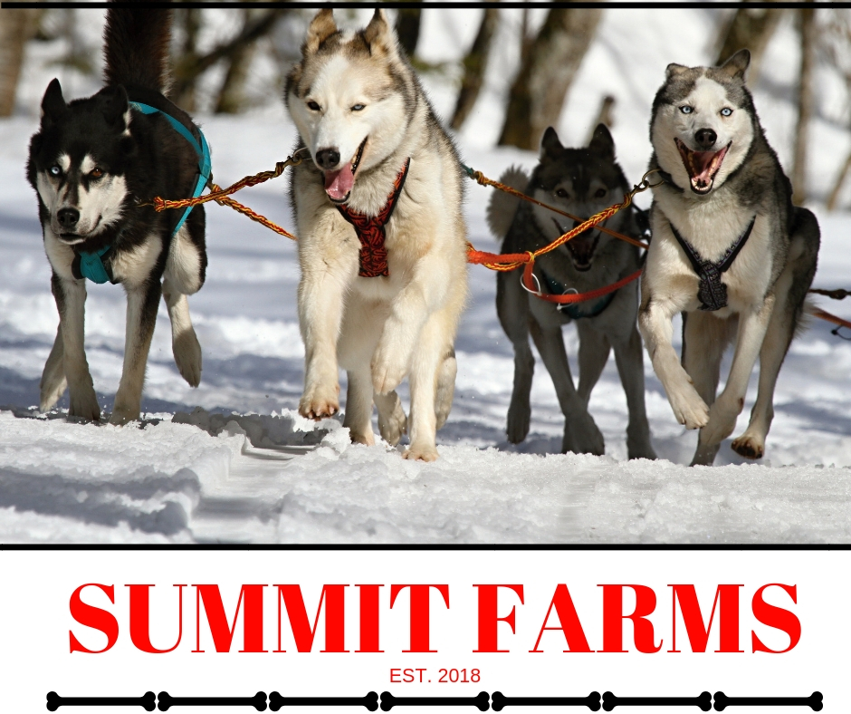

Summit Farms

Caring For Your Dog
- Feed your dogs adequately. Your dogs should eat a mix of high-quality dry and wet (canned) food with high levels of fat and protein. The protein and fat content in the food provides your dogs with the energy they need to run long distances. Whatever you feed your dogs, they should be taking in around 10,000 calories each day when they’re on the trail. Some mushers mix a cup or two of water into the food to help the dogs digest the food more easily and prevent dehydration. Adding water is also necessary when thawing out frozen food on the trail. Many sled dogs also like fish. Be sure to cook it thoroughly and remove bones before feeding it to your dogs. Feeding a sled dog can be expensive, with costs totaling up to $500 per year.
- Ensure your dogs have enough to drink. Sled dogs need access to water at all times to ensure they don’t become dehydrated. Place water in a pan or bowl that won’t spill. A deep, heavy ceramic water bowl is best since, unlike flimsy metal or plastic bowls, they are less likely to be knocked over. Empty the bowl each day and fill it with fresh water. Clean the pan or bowl at least once each week to prevent food residue and bacteria from building up. Always ensure your dogs have had plenty to drink before going on a run.
- Protect your dogs’ skin. Sled dogs are bred for cold temperatures. However, even the hardiest sled dogs have their limits. The temperature a dog can comfortably handle varies depending on its age, coat, and overall health, and there is no absolute temperature at which dogs should be kept from the elements. However, stay attentive to your dogs’ behavior and attitude, and look for changes that might occur in extreme weather. If your dogs are shivering, curled up in the snow and not moving, or engaging in other behavior that indicates they are unable to tolerate the temperature, don’t force them to continue running. Dogs can get frostbite, so always use caution if you suspect your dogs are at risk. In extreme weather, dress your dogs in special coats and blankets to give them an added layer of protection against the cold.
- Take your dogs to the vet regularly. Many races require that your dogs are up-to-date on their shots and vaccines. When getting their shots, your vet should also examine the dogs for other illnesses or problems. Sled dogs are more likely to have joint problems then regular dogs, so if you catch the problem early, it could save your dog a lot of pain later and keep your team strong.
- Give your dogs time to play. Sled dogs work hard. Show your appreciation by giving them time to relax when they’re not in the harness. Provide a large yard for your dogs to play in. This gives the dogs a space where they can be active outside of their sled regimen. Ensure the yard is fenced so they cannot run off. Your dogs should be allowed to play with each other, but you should play with them, too. They might like catching a ball, frisbee, or stick and bringing it back to you. Clean your yard regularly. Depending on how many dogs you have, you might need to do “poop patrol” two or three times daily. Your yard should be level and free of pooling water where bacteria can collect.
- Tether your sled dogs outside. When your dogs are not in the yard, put them in their kennel. The kennel should have a semi-open arrangement that allows each dog to get close enough to its neighbor to play and socialize when tethered, but should also give the dog the option of sitting by itself without possibility of interruption from other dogs. Experiment with the spacing to figure out how long your tether should be and how far apart each dog should be spaced from its neighborhood. Use straw for bedding. Mix some pine shavings into the straw if you’re concerned the kennel is accumulating moisture. Change the bedding every two to three weeks, or when it is visibly dirty. The size of the kennel depends on how many sled dogs you have. Each dog should have at least 35 square feet to itself. Puppies should be kept in the kennel but not tethered. Provide a separate, smaller pen for them to socialize in together.
- Have space inside for your dogs. If your region of the country gets really cold you should bring your dogs inside. Temperatures of -30 degrees Fahrenheit or below usually qualify as a reasonable benchmark for bringing your dogs inside. Make a “dog box” -- a series of deep wooden shelves that can accommodate a sled dog’s body -- in your barn or basement. Line the dog boxes with soft blankets or towels when in use. You should also bring your dogs inside if it is raining and your kennel is not well-protected from rain and snow. Although sled dogs are bred for cold temperatures, when they are not running, they have a harder time staying warm.